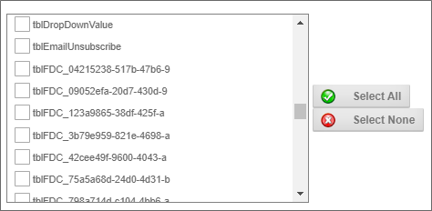

Users of Process Director v4.51 and higher may use a feature named Form Data Caching, which BP Logix has implemented to improve the speed of querying and searching for form data, and to improve performance of the Process Director server. This feature affects the performance of both Knowledge Views and SQL views that you create in the product.
We often think of the data from a Form instance being stored in its own table, like a spreadsheet, where each data field is a column and each individual form instance is represented by a row in the table or spreadsheet. Process Director doesn't store form data in that way, however. Instead, there is a single database table named tblFormData that stores the data for every field from every form instance. As you might imagine, over time, this table gets quite large. Even a reasonably-sized installation of Process Director may contain millions of records in tblFormData. So, when you run any query or Knowledge View for form data, Process Director, by default, has to parse through all of the records in tblFormData to return the results you want, which may take an inconveniently long time and a large amount of system resources. The more form instances that exist in your installation, the longer it takes to parse through this ever-growing recordset.
Form Data Caching helps to alleviate this problem. When you use this feature, Process Director makes a cache table that contains only the instance data for the Form definition for which you've configured the feature. You can then run your Knowledge Views or SQL Views on that cached table, instead of tblFormData. Doing so may provide significant performance improvements, and less resource usage, since you are only having to parse through the relevant data from a single form definition.
In the Options section of the Properties tab for each Form definition, there is check box property named Enable Form Data Cache. Checking the property will enable process Director to create the cache table in the database when you direct a cache to be created. The temporary cache table will be named with the naming convention, tblFDC_GUID, with the GUID portion being the actual GUID of the Form Definition.
To direct Process Director to create a Form Cache, you can call a page named "build_form_cache.aspx". This page is located in the root directory of the web site, and can be accessed with the URL, "http://localhost/build_form_cache.aspx", where PDServerName is the base URL of your process Director installation. This page will build the form caches for all of the forms that are configured to use Form Data Caching. The URL does, however, accept the URL parameter "?FORMID=GUID", where, again, the GUID would be the GUID of a specific Form definition that is configured to use Form Data Caching. When you use this URL parameter, Process Director will create the Form Cache only for the form you specify in the parameter, instead of creating the cache for all configured forms.
To keep the form cache relatively current, you can use the Windows Scheduler to call the bputil.exe utility to run this page on a scheduled basis, by using the commands (Where PATH is the installation directory for Process Director, e.g. c:\Program Files\BP Logix\Process Director\):
"PATH\bputil.exe" SU http://localhost/build_form_cache.aspx
...to create the whole Form Cache
or
"PATH\bputil.exe" SU http://localhost/build_form_cache.aspx?FORMID=GUID
...to create the cache table for a single Form.
For Process Director v5.39 and higher, an additional URL parameter, forminstid, will pass a Form Instance ID to update the form cache for a specified form instance.
"PATH\bputil.exe" SU http://localhost/build_form_cache.aspx?forminstid=FormInstanceGUID
Once the cache table has been created, the table will appear in any Data Source objects of the Internal Database Datasource Type as a table with the prefix "tblFDC_" followed by a GUID, e.g.: tblFDC_04215238-517b-47b6-9. The example below displays several Form Data Cache tables in a Process Director Data Source object.

You can query the cache in one of two ways: Using a Knowledge View, or creating a SQL View.
In the Configure tab of a Knowledge View definition, there is a check box property named This Knowledge View will only use cached Form Instance Data. Assuming that 1) the Knowledge View returns Form instance data, 2) the Form definition has been configured to use caching, and 3) a cache has been created for the Form, the Knowledge View will query the cache for the form, and not tblFormData. If the form definition does not have the cache check box set, the Knowledge View will ignore the cache configuration setting and query tblFormData instead. If the Form and Knowledge View are configured to use Form Data Caching, but the cache table doesn't exist, then the user will receive an error message when the Knowledge View runs.
You can create SQL Views for any form in the Form Data SQL View tab of a Form Definition, which contains a check box property named Use cached tblFormData table for SQL VIEW?. Assuming that the Form is configured to use Form Data Caching, then, when this property is checked, Process Director will create a SQL View that queries the cached table rather than tblFormData. If the Form isn't configured to use Form Data Caching, or the cache doesn't exist, any attempt to create the view will fail immediately.
Form Data Caching may provide significant performance improvements, but the nature of your form data, and its distribution across forms, does play a large part in how much performance improvement you'll actually see. If you have a system with many Forms, and with the data more or less regularly distributed between them, then the performance improvement should be noticeable. On the other hand, if you have very few forms—especially if you have a single form that contains the majority of the data—the improvements will be much less noticeable.
When you are querying the cache, whether via a Knowledge View or SQL View, you should remember that the data you'll see is only as recent as when the cache was actually created. If you haven't created the cache for five days, then the most recent data will be five days old. As an implementer, when you create Knowledge Views that use cached data, you should consider letting your users know that the data may not be current. For instance, in the Knowledge View Definition, you may want to use the HTML Code property to display a message that informs the user that the data they are viewing is cached, rather than live.
Creating the cache queries tblFormData and creates a new temporary table for each form, so the cache creation process can impact performance while it's running, especially if you are creating a large number of caches at one time. So, you need to balance your need to have current data in each form cache with the need to create the cache during times of lower system use, to minimize the performance impact on the system.